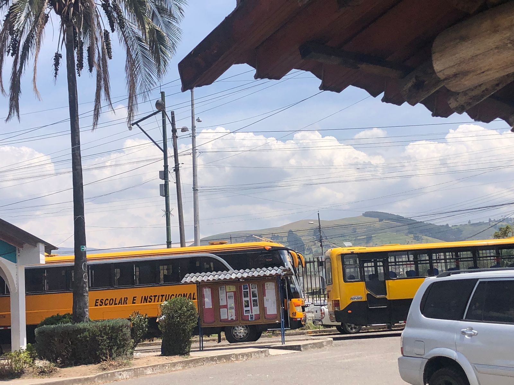

Transporte Escolar
Contamos con un servicio de transporte seguro y eficiente para nuestros estudiantes, asegurando que lleguen a la institución y a sus hogares de manera puntual y cómoda.El servicio de transporte escolar ofrece a los estudiantes una opción segura, cómoda y puntual para desplazarse entre su hogar y la escuela. Al reducir el riesgo de accidentes y facilitar el acceso a la educación, este servicio garantiza que todos los alumnos, independientemente de su ubicación, puedan asistir regularmente a clases. Además, el transporte escolar fomenta la socialización entre compañeros, creando un ambiente propicio para la amistad y la integración. Todo esto se traduce en un beneficio significativo para las familias, al proporcionar una alternativa económica y eficiente en comparación con el uso de vehículos particulares
 Regresar a la página principal